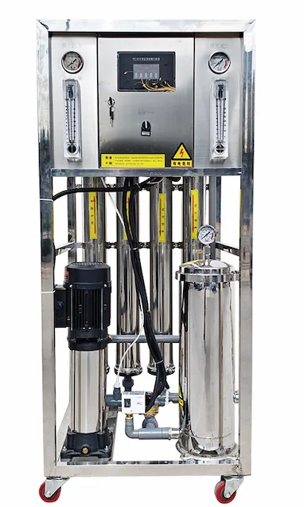

Large Industrial Reverse Osmosis Water Treatment Equipment 3-100 TPH
Send InquiryLarge Industrial Reverse Osmosis Water Treatment Equipment 3-100 TPH — Pure Water Flow: 3-100 t/h.

Precision Filter RO Water Purification Equipment 250-1000 L/h is an industrial reverse osmosis system for project buyers that need clear feed-water analysis, target output, recovery rate, pretreatment design, pump selection, membrane array and control panel logic. Key specifications include Pure Water Flow: 250-1000 L/h.
Precision Filter RO Water Purification Equipment 250-1000 L/h should be specified from feed-water analysis, target permeate quality, operating hours, recovery rate, pretreatment, pump selection, membrane array and control panel requirements. That information makes the industrial RO water treatment equipment quote useful for factories instead of a generic equipment list.
For Precision Filter RO Water Purification Equipment 250-1000 L/h, use this model when the buyer needs a defined purifier configuration with practical installation details, replacement filter planning and export carton control. The page should answer how the unit fits into a kitchen, office or commercial drinking-water program before repeating broad RO or OEM claims.
| Item | Specification |
|---|---|
| Product Type | Precision Filter RO Water Purification Equipment 250-1000 L/h |
| Operating Mode | Full automatic intelligent operation, with manual service mode according to project needs |
| Treatment Process | Precision filter + RO |
| Pure Water Flow | 250-1000 L/h |
| Feed Water | Municipal tap water |
| Feed pressure | 0.1-0.4 MPa |
| Project customization | Project layout and controls can be adjusted after water-source review |
| Application | Commercial drinking-water and water-treatment projects |
| OEM/ODM | Configuration is confirmed by project specification |
| MOQ | Confirmed by capacity, configuration and OEM level |
Precision filter + RO; 250-1000 L/h; Municipal tap water.
| Treatment Process | Precision filter + RO |
|---|---|
| Feed Water | Municipal tap water |
| Feed pressure | 0.1-0.4 MPa |
| Project customization | Project layout and controls can be adjusted after water-source review |
Precision filter + RO
250-1000 L/h
Municipal tap water
0.1-0.4 MPa
Project layout and controls can be adjusted after water-source review
Large Industrial Reverse Osmosis Water Treatment Equipment 3-100 TPH — Pure Water Flow: 3-100 t/h.

Small and Medium Seawater Desalination RO Equipment — Nitrate removal rate: ≥90%.

20-inch Commercial RO Water Purifier 800G/1200G/1600G/2000G — Filtration Stages: Five-stage filtration with PP sediment, pre-carbon, RO membrane, post carbon or custom cartridge sequence.